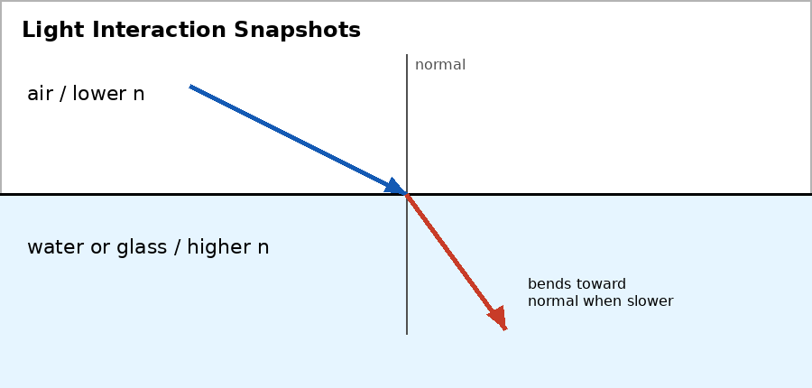

Unit 6 DOK 1.1 Light Interaction Snapshot Sort V1
Name:
Version 1
Show work and mark answers clearly.

A beam of light interacts with four materials: a mirror, clear glass, black cloth, and a hand blocking a lamp.
- Classify each interaction as reflection, transmission, absorption, scattering, or shadow formation.
- Choose one and explain what happens to the light.
Unit 6 DOK 1.1 Light Interaction Snapshot Sort V2
Name:
Version 2
Show work and mark answers clearly.
A flashlight shines on aluminum foil, frosted plastic, dark pavement, and notebook paper.
- Classify the main light interaction for each surface.
- Explain why frosted plastic does not form a clear image even though light passes through it.
Unit 6 DOK 1.1 Light Interaction Snapshot Sort V3
Name:
Version 3
Show work and mark answers clearly.
Sunlight strikes a calm pond, passes through a window, warms a black backpack, and is blocked by a tree.
- Classify each interaction.
- Explain how the tree shadow forms.
Unit 6 DOK 1.1 Light Interaction Snapshot Sort V4
Name:
Version 4
Show work and mark answers clearly.
In a classroom demo, light hits wax paper, a mirror, a red folder, and a clear prism.
- Sort the examples by the dominant interaction.
- Explain the difference between transparent and translucent behavior.
Unit 6 DOK 1.1 Light Interaction Snapshot Sort V5
Name:
Version 5
Show work and mark answers clearly.
A stage spotlight hits a shiny floor, black curtain, glass door, and actor standing in front of a screen.
- Identify the main interaction in each case.
- Explain which interaction helps the audience see the actor.
Unit 6 DOK 1.1 Light Interaction Snapshot Sort V6
Name:
Version 6
Show work and mark answers clearly.
An optical device includes a lens, a black interior surface, a silver mirror, and an opening that blocks some light.
- Classify what each part is designed to do to light.
- Explain why an optical device may need both transmission and absorption.